| ・ The 25th International Congress on Sound and Vibration (ICSV25)@Hiroshima (H30.07.08-12) | |||
M2のT口さんが，ICSV25において音響計測の研究で「INFLUENCE OF APERTURE RATIO ON AMPLITUDE AND PHASE OF INPUT IMPEDANCE IN A HALF-STOPPED HORN」という題目を発表しました．ホルン奏者でもあるT口さんの演奏法について実験と計算に基づいた発表です．写真はT口さん． |
|||
|
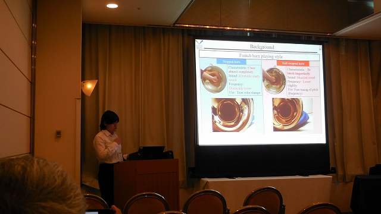
無事動画再生されたそうです |
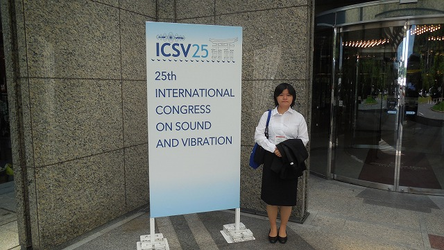
看板前写真 | ||
|
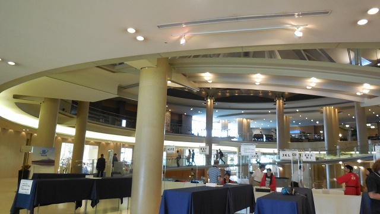
スロープが |
気に入った模様 | ||
|
お土産 |
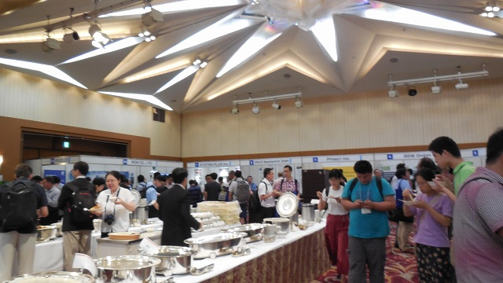
ランチ | ||
|
企業展示もあります |
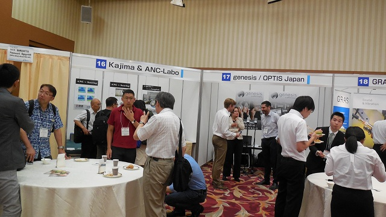
食べたり議論したり | ||
|
移動 |
鳥居 | ||
|
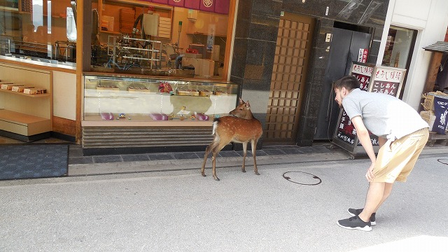
あんま見んといて |
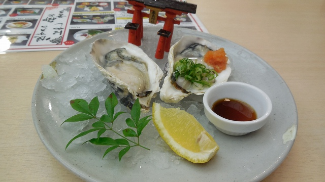
発表後だし生牡蠣（音響学会の締切は？ | ||
|
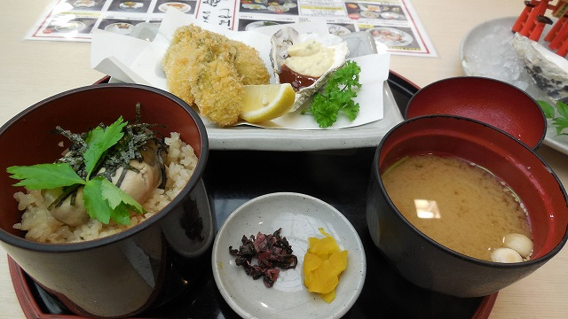
有名なの全部 |
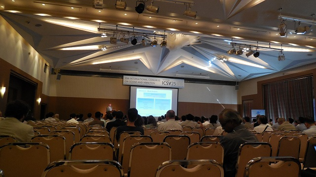
基調講演 | ||
|
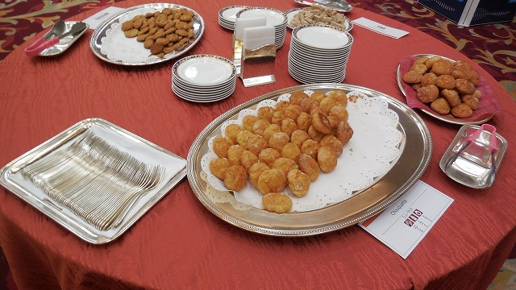
牡蠣？ |
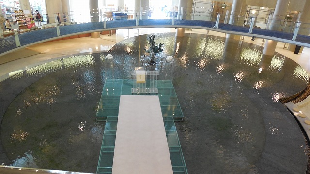
気に入りすぎ | ||